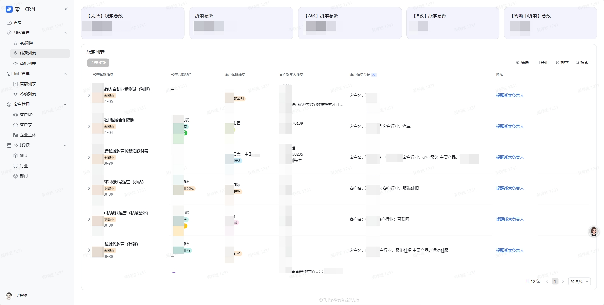
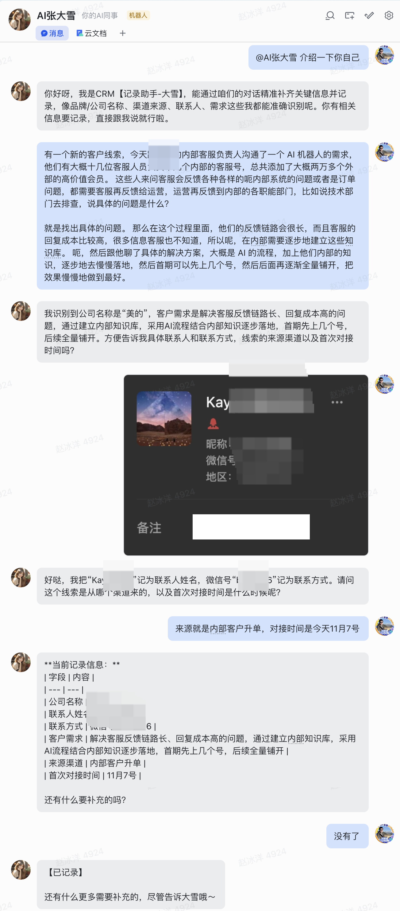
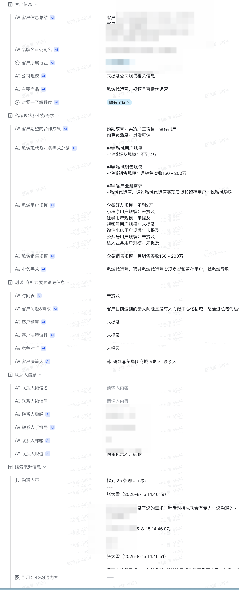
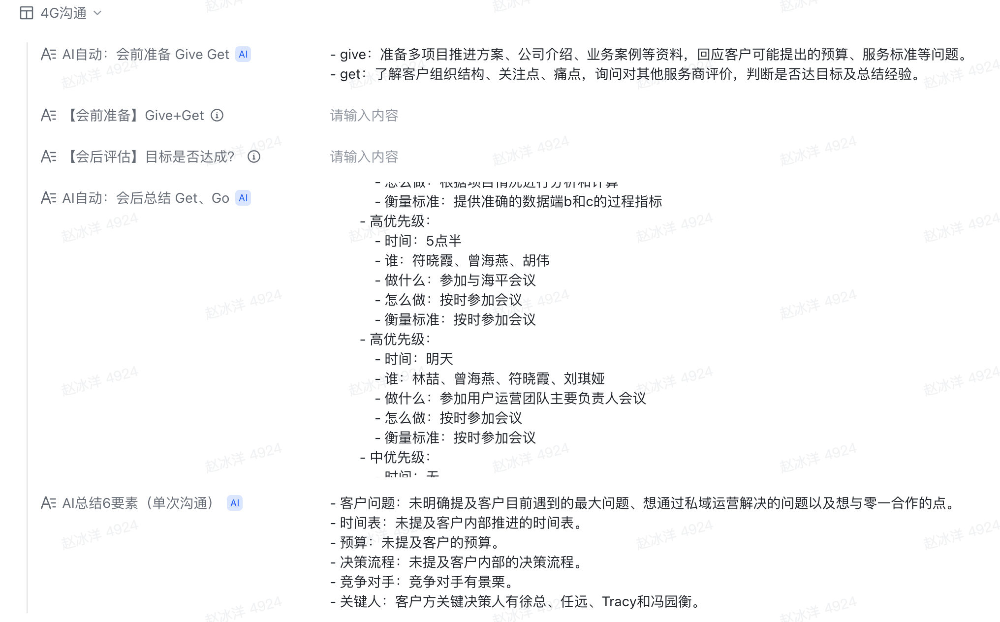
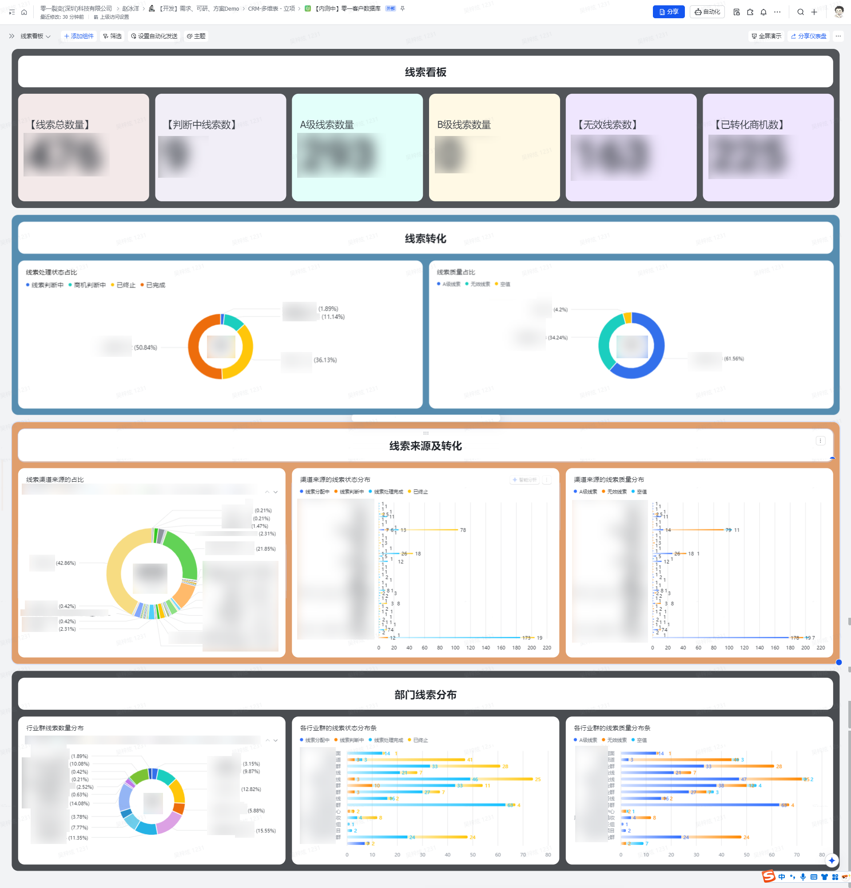
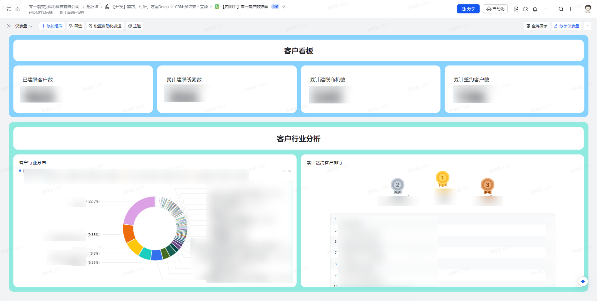
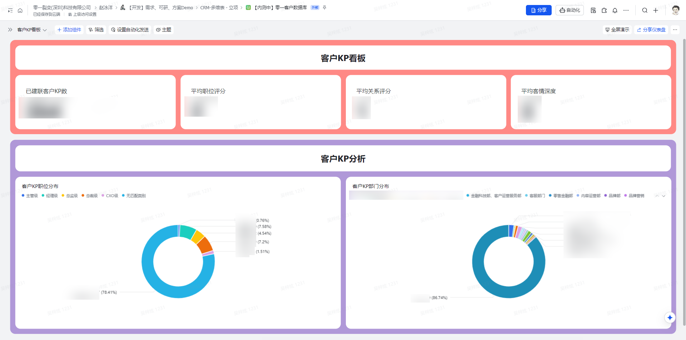

01统一业务对象，贯通 LTC 全流程客户、KP、SKU、线索、商机、售前、签约和财务进入同一产品入口零一 CRM 产品总览从线索到签约与回款，数据不再散落在多套表格与流程中线索商机售前签约回款
02销售只需聊天，AI 自动补齐文本、语音、图片和文档进入同一对话入口，80%+ 字段由 AI 提取对话采集逐步追问并生成结构化记录字段提取沟通建议
03经营看板实时穿透转化与客情从静态报表升级为动态经营，客户贡献、线索质量和 KP 关系随时可见线索经营总览质量、来源、部门分布与转化状态实时更新客户看板KP 客情看板